图像变换
概述
第5章介绍了许多类型的图像处理方法。迄今为止，所介绍的大多数操作都用于增强、修改或者“处理”图像，使之成为类似但全新的图像。
本章将关注图像变换（image transform，即将一幅图像转变成图像数据）的另一种表现形式。变换最常见的例子就也许是傅里叶变换（Fourier transform），即将图像转换成源图像数据的另一种表示。这类操作的结果仍然保存为OpenCV图像结构的形式，但是新图像的每个单独像素表示原始输入图像的频谱分量而不是我们通常所考虑的空间分量。
计算机视觉中经常会用到许多有用的变换。OpenCV提供了一套完整的实现工具和方法，其中一些普通的工具和方法就像积木一样可帮助我们实现各种图像转换。
卷积
卷积（convolution）是本章所讨论的很多变换的基础。从抽象的层次说，这个术语意味着我们要对图像的每一个部分进行操作。从这个意义上讲，我们在第5章所看到的许多操作可以被理解成普通卷积的特殊情况。一个特殊卷积所实现的功能是由其卷积核的形式决定的。这个核本质上是一个大小固定、由数值参数构成的数组，数组的参考点（anchor point）通常位于数组的中心。数组的大小称为核支撑（support of the kernel）。单就技术而言，核支撑实际上仅仅由核数组的非0部分组
成。
图6-1描述了以数组中心为参考点的3×3卷积核。若要计算一个特定点的卷积值，首先将核的参考点定位到图像的第一个像素点，核的其余元素覆盖图像中其相对应的局部像素点。对于每一个核点，我们可以得到这个点的核的值以及图像中相应图像点的值。将这些值相乘并求和，并将这个结果放在与输入图像参考点所相对应的位置。通过在整个图像上扫描卷积核，对图像的每个点重复此操作。
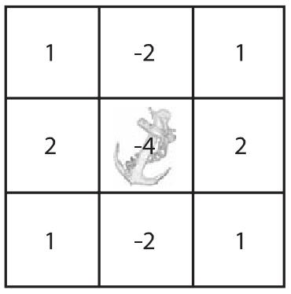
图6-1：Sobel导数的3×3核，注意，参考点在核的中心
当然，我们可以用方程来表示这个过程。如果我们定义图像为I(x, y)，核为G(i, j)(其中0<i<Mi-1和0<j<Mj-1)，参考点位于相应核的(ai, aj)坐标上，则卷积H(x, y)定义如下：
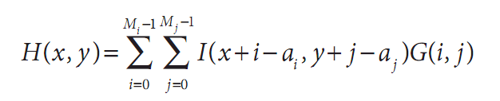
注意观察运算次数，至少初看上去，它似乎等于图像的像素数乘以核的像素数。这其实是很大的计算量并且也不是仅仅用其中的一些for循环以及许多指针再分配就能做的事情。类似这种情况，最好让OpenCV来做这个工作以利用OpenCV已编程实现的最优方法。其函数为cvFilter2D()：
void cvFilter2D(
const CvArr* src,
CvArr* dst,
const CvMat* kernel,
CvPoint anchor = cvPoint(-1, -1)
);
这里我们创建一个适当大小的矩阵，将系数连同源图像和目标图像一起传递给cvFilter2D()。我们还可以有选择地输入一个CvPoint指出核的中心位置，默认值(cvPoint(-1, -1))会设参考点为核的中心。如果定义了参考点，核的中心可以是偶数，否则只能是奇数。
源图像src和目标图像dst大小应该相同，有些人可能认为考虑到卷积核的额外的长和宽，源图像src应该大于目标图像dst。但是在OpenCV里源图像src和目标图像dst的大小是可以一样的，因为在默认条件下，在卷积之前，OpenCV通过复制源图像src的边界创建了虚拟像素，这样以便于目标图像dst边界的像素可以被填充。复制是通过input(-dx, y)=input(0, y), input(w+dx, y)=input(w-1, y)等实现的，此默认行为还有一些替代方法，我们将在下一节讨论。
提示一下，这里我们所讨论的卷积核的系数应该是浮点类型的，这就意味着我们必须用CV_32F来初始化矩阵。
卷积边界
对于卷积，一个很自然的问题是如何处理卷积边界。例如，在使用刚才所讨论的卷积核时，当卷积点在图像边界时会发生什么？许多使用cvFilter2D()的OpenCV内置函数必须用各种方式来解决这个问题。同样在做卷积时，有必要知道如何有效解决这个问题。
这个解决办法就是使用cvCopyMakeBorder()函数，它可以将特定的图像轻微变大，然后以各种方式自动填充图像边界。
void cvCopyMakeBorder(
const CvArr* src,
CvArr* dst,
CvPoint offset,
int bordertype,
CvScalar value = cvScalarAll(0)
);
Offset变量告诉cvCopyMakeBorder()将源图像的副本放到目标图像中的位置。典型情况是，如果核为N×N(N为奇数)时，那么边界在每一侧的宽度都应是(N-1)/2，即这幅图像比源图像宽或高N-1。在这种情况下，可以把Offset设置为cvPoint((N-1)/2, (N-1)/2)，使得边界在每一侧都是偶数。
Bordertype既可以是IPL_BORDER_CONSTANT，也可以是IPL_BORDER_REPLICATE（见图6-2）。在第一种情况下，
value变量被认为是所有在边界的像素应该设置的值。在第二种情况下，原始图像边缘的行和列被复制到大图像的边缘。注意，测试的模板图像的边缘是比较精细的（注意图6-2右上角的图像）。在测试的模板图像中，除了在原图案边缘附近的像素变白外，有一个像素宽的黑色边界。这里定义了另外两种边界类型，IPL_BORDER_REFLECT和IPL_BORDER_WRAP，目前还没有被OpenCV所实现，但以后可能会在OpenCV中实现。
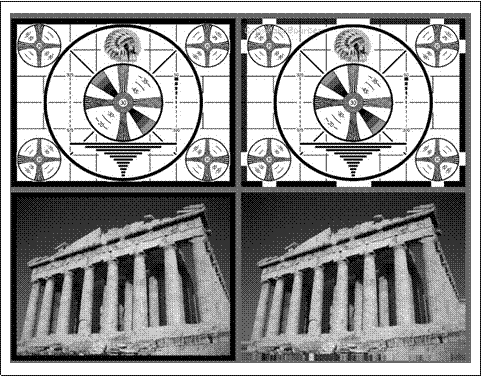
图6-2：扩大的图像边界，左列显示的是IPL_BORDER_CONSTANT，边界是用0填充的，右列是IPL_BORDER_REPLICATE，在水平和垂直两个方向复制边界像素
我们在前面已经提到，当调用OpenCV库函数中的卷积功能时，cvCopyMakeBorder()函数就会被调用。在大多数情况下，边界类型为IPL_BORDER_REPLICATE，但有时并不希望用它。所以在另一种场合，可能用到cvCopyMakeBorder()。你可以创建一幅具有比想要得到的边界稍微大一些的图像，无论调用任何常规操作，接下来就可以剪切到对源图像所感兴趣的部分。这样一来，OpenCV的自动加边就不会影响所关心的像素。
梯度和Sobel导数
一个最重要并且最基本的卷积是导数的计算（或者是其近似值），有许多方法可以做到，但是只有少数方法适合于给定情况。
通常来说，用来表达微分的最常用的操作是Sobel微分算子（见图6-3和图6-4）。Sobel算子包含任意阶的微分以及融合偏导（例如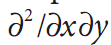
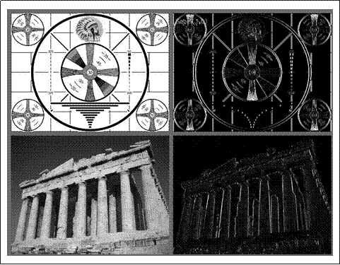
图6-3：逼近x方向上一阶微分的Sobel算子的效果
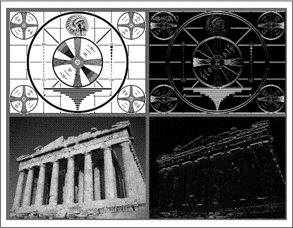
图6-4：逼近y方向上一阶微分的Sobel算子的效果
cvSobel(
const CvArr* src,
CvArr* dst,
int xorder,
int yorder,
int aperture_size = 3
);
这里，src和dst分别是输入图像和输出图像，xorder和yorder是求导的阶数。通常只可能用到0，1，最多2。值为0表明在这个方向上没有求导，aperture_size参数是方形滤波器的宽（或高）并且应该是奇数。目前，aperture_size支持1,3,5,7。如果源图像src是8位的，为避免溢出，目标图像的深度必须是IPL_DEPTH_16S。
Sobel导数有一个非常好的性质，即可以定义任意大小的核，并且这些核可以用快速且迭代方式构造。大核对导数有更好的逼近，因为小核对噪声更敏感。
为了更好地理解以上内容，我们必须认识到一点，即Sobel导数并不是真正的导数，因为Sobel算子定义于
一个离散空间之上。Sobel算子真正表示的是多项式拟合，也就是说，x方向上的二阶Sobel导数并不是真正的二阶导数。它是对抛物线函数的局部拟合。这说明人们为什么想用较大的核，因为较大核是在更多像素上计算这种拟合。
Scharr滤波器
事实上，在离散网格的场合下有很多方法可以近似地计算出导数。对于小一点的核而言，这种使用于Sobel算子近似计算导数的缺点是精度比较低。对于大核，由于在估计时使用了更多的点，所以这个问题并不严重。这种不精确性并不会直接在cvSobel()中使用的X和Y滤波器中表现出来，因为它们完全沿x轴和y轴排列。当试图估计图像的方向导数（directional derivative，即，使用y/x滤波器响应的反正切得到的图像梯度的方向）时，难度就出现了。
为了承上启下，这里有一个这类图像度量的具体例子。这个例子为从一个物体收集形状信息的过程，而这个过程是通过求取目标周围梯度角度的直方图来实现的。
这样的直方图是许多通用或常见分类器训练和工作的基础。在这种情况下，对梯度角不准确的度量将会降低分类器识别的性能。
对于一个3×3的Sobel滤波器，当梯度角度越接近水平或者垂直方向时，这样的不准确就更加明显。OPENCV通过在cvSobel()函数中一些特殊aperture_size值CV_SCHARR的隐性使用，以解决小（但是快）的3×3 Sobel导数滤波器不准确的问题。Scharr滤波器同sobel滤波器一样快，但是准确率更高，所以当你利用3×3滤波器实现图像度量的时候应该使用Scharr滤波器。Scharr滤波器的滤波系数如图6-5所示[Scharr00]。
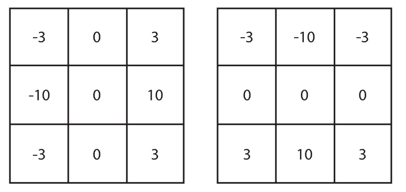
图6-5：使用标记CV_SHARR的3×3 Scharr滤波器
拉普拉斯变换
OpenCV的拉普拉斯函数（第一次被Marr[Marr82]应用于视觉领域）实现了拉普拉斯算子的离散模拟。
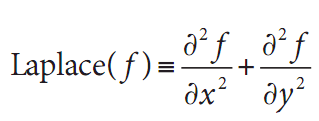
因为拉普拉斯算子可以用二次导数的形式定义，可假设其离散实现类似于二阶Sobel导数。事实的确如此，OpenCV在计算拉普拉斯算子时直接使用Sobel算子。
void cvLaplace(
const CvArr* src,
CvArr* dst,
int apertureSize = 3
);
cvLaplace()函数通常把源图像和目标图像以及中孔大小作为变量。源图像既可以是8位（无符号）图像，也可以是32位（浮点）图像。而目标图像必须是16位（有符号）或者32位（浮点）图像。这里的中孔与Sobel导数中出现的中孔完全一样，事实上主要给出区域大小，在二次求导的计算中，采样这个区域的像素。
拉普拉斯算子可用于各种情况。一个通常的应用是检测“团块”。联想到拉普拉斯算子的形式是沿着X轴和Y轴的二次导数的和，这就意味着周围是更高值的单点或者小块（比中孔小）会将使这个函数值最大化。反过来说，周围是更低值的点将会使函数的负值最大化。
基于这种思想，拉普拉斯算子也可以用作边缘检测。为
达此目的，只需要考虑当函数快速变化时其一阶导数变大即可。同样重要的是，当我们逼近类似边缘的不连续地方时导数会快速增长，而穿过这些不连续地方时导数又会快速减小。所以导数会在此范围内有局部极值。这样我们可以期待局部最大值位于二阶导数为0的地方。明白了吗？原始图像的边缘位于拉普拉斯的值等于0的地方。不幸的是，在拉普拉斯算子中，所有实质性的和没有意义的边缘的检测都是0。但这并不是什么问题，因为我们可以过滤掉这些点，它们的一阶（Sobel）导数值也很大。图6-6显示对图像应用拉普拉斯和一次、二次导数以及它们的0交叉的例子。
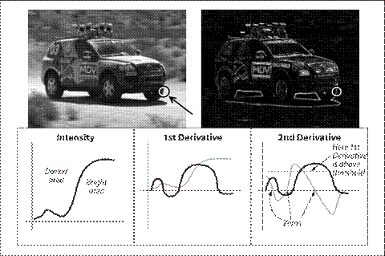
图6-6：赛车图像的拉普拉斯变换（右上角）。放大轮胎（白圈）并且只考虑X方向，我们（定性）展示了具有代表性的亮度、一次和二次导数（下面3个子图），二次导数的0值对应着边，相对较大的一次导数的0对应的是较强的边缘
Canny算子
以上所描述的边缘检测的方法在1986年由J.Canny得到完善，也就是通常所称的Canny边缘检测法[Canny86]。Canny算法同6.4节提到的简单的关于拉普拉斯算法的不同点之一是在Canny算法中，首先在x和y方向求一阶导数，然后组合为4个方向的导数。这些方向导数达到局部最大值的点就是组成边缘的候选点。
然而，Canny算法最重要的一个新特点是其试图将独立边的候选像素拼装成轮廓。轮廓的形成是对这些像素运用滞后性阈值。这意味着有两个阈值，
上限和下限。如果一个像素的梯度大于上限阈值，则被认为是边缘像素，如果低于下限阈值，则被抛弃，如果介于二者之间，只有当其与高于上限阈值的像素连接时才会被接受。
Canny推荐的上下限阈值比为2:1到3:1之间。图6-7和图6-8分别显示了利用cvCanny()以及上下限阈值比为5:1和3:2的测试图案和图像的结果。
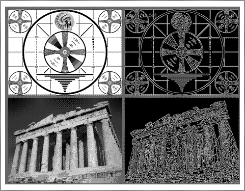
图6-7：上下限分别为50和10时用Canny算子对两幅不同图像进行边缘检测的结果
void cvCanny(
const CvArr* img,
CvArr* edges,
double lowThresh,
double highThresh,
int apertureSize = 3
);
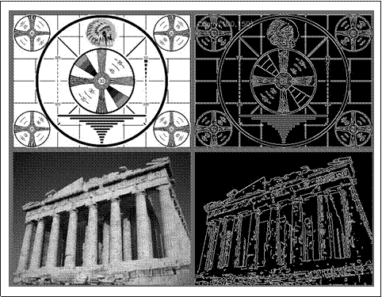
图6-8：上下限分别为150和100时用Canny算子对两幅不同图像进行边缘检测的结果
cvCanny()函数需要输入一幅灰度图，输出图也一定是灰度的（实际上是布尔图像）。接下来两个参数是下限阈值和上限阈值，最后一个参数是另一个中孔。通常，这个被Sobel算子用到的中孔是cvCanny()在内部使用的。
霍夫变换
霍夫变换是一种在图像中寻找直线、圆及其他简单形式的方法。原始的霍夫变化是一种直线变换，即在二值图像中寻找直线的一种相对快速方法。变换可以推广到其他普通的情况，而不仅仅是简单的直线。
霍夫直线变换的基本理论是二值图像中的任何点都可能是一些候选直线集合的一部分。如果要确定每条线进行参数化，例如一个斜率a和截距b，原始图像中的一点会变换为(a, b)平面上的轨迹，轨迹上的点对应着所有过原始图像上点的直线（见图6-9）。如果我们将输入图像中所有非0像素转化成输出图像中的这些点集并且将其贡献相加，然后输入图像（例如(x, y)平面）出现的直线将会在输出图像（例如(a, b)平面）以局部最大值出现。因为我们将每个点的贡献相加，因此(a, b)平面通常被称为累加平面（accumu lator plane）。
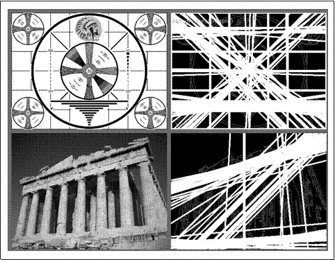
图6-9：霍夫变换找到了图像中的许多线；其中一些是想要的，而另一些不是
你可能认为用斜率-截距的形式来代表所有通过的点并不是一种最好的方式（因为作为斜率函数，直线的密度有相当的差异，以及相关的事实是可能的斜率间隔的范围是从负无穷到正无穷）。正是由于这个原因，在实际数值计算中使用的变换图像的参数化略有些不同。首先的参数化方式是每一行代表极坐标（ρ, θ）中的一个点，并且隐含的直线是通过象征点，垂直于远点到此点的半径。如图6-10所示，此直线的方程如下：
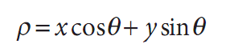
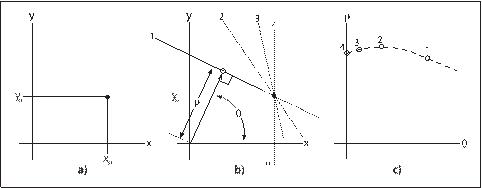
图6-10：a)显示图像平面的一个点(x0, y0)，b)显示a)图中参数ρ和θ不同时的许多线，这些线隐含着在(ρ, θ)平面内的很多点，放在一起就形成了一条特征曲线（c图）
OpenCV的霍夫变换算法并没有将这个算法显式地展示给用户。而是简单地返回(ρ, θ)平面的局部最大值。然而，需要了解这个过程以便更好地理解OpenCV霍夫变换函数中的参数。
OpenCV支持两种不同形式的霍夫变换：标准霍夫变换（SHT）[Duda72]和累计概率霍夫变换(PPHT)。刚才所说的是SHT算法。PPHT是这种算法的一个变种，计算单独线段的方向以及范围（如图6-11所示）。之所以称PPHT为“概率”的，是因为并不将累加器平面内的所有点累加，而只累加其中的一部分。该想法是如果峰值将要足够高，只用一小部分时间去寻找它就足够了。这个猜想的结果可以实质性地减少计算时间。尽管有一些变量的含义是取决于用哪个算法，但可以使用OpenCV中的同一个函数来访问这两个算法。
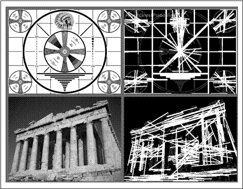
图6-11：首先运行Canny边缘检测（参数1=50，参数2=150），结果以灰度图显示。然后运行累计概率的霍夫变换（参数1=50，参数2=10），结果被白色覆盖，可以看到由霍夫变换产生的粗线
CvSeq* cvHoughLines2(
CvArr* image,
void* line_storage,
int method,
double rho,
double theta,
int threshold,
double param1 = 0,
double param2 = 0
);
第一个变量是输入图像，必须是8位的，但输入信息可以被看成是二值的（即所有的非0像素被认为是相等的）。第二个参数是执行保存结果位置的指针，既可以是内存块（见第8章的CvMemoryStorage），也可以
是N*1的矩阵数列（行数N将有助于限制直线的最大数量）。下一个参数method可以是CV_HOUGH_STANDARD，CV_HOUGH_PROBABILISTIC或者CV_HOUGH_MULTI_SCALE，分别对应SHT，PPHT或SHT的多尺度变种。
下面两个变量，rho和theta是用来设置直线所需要的分辨率（例如，累加平面所需要的分辨率）。Rho的单位是像素而theta的单位是弧度。因此，累加平面可以看成是由rho像素和theta弧度组成的二维直方图。threshold是认定为一条直线时在累计平面中必须达到的值。最后一个参数在实际应用中有点棘手，它没有被归一化，所以应该将其根据SHT中的图像进行尺度化。请记住，这个变量实际上表示支持所返回的直线的（在边缘图像的）点的数量。
在SHT中没有用到param1和param2参数。对于PPHT，param1设置为将要返回的线段的最小长度，param2设置为一条直线上分离线段不能连成一条直线的分隔像素点数。对于多尺度的HT(Hough Transform)，这两个参数是用来指明应被计算的直线参数中较高的分辨率。多尺度的HT首先根据rho和theta参数准确计算直线的位置，然后分别通过param1和param2等比例继续细化结果（例如，rho中最终的分辨率是param1分割rho产生的，theta中最终的分辨率是param2分割theta产生的）。
函数的返回内容依赖于调用方式。如果line_storage是矩阵数组，最终的返回值为空。在这种情形下，使用SHT或者多尺度的HT时，矩阵应该是CV_32FC2类型，当使用PPHT时，矩阵应为CV_32SC4类型。在头两种
情形下，每一行中ρ-和θ-值应在数组中的两个通道里。在PPHT情形下，四个通道保留的是返回线段开始点和结束点的x-和y-值。在所有的情形下，数组的行数将会被cvHoughLines2()更新以便正确反映直线的数量。
如果line_storage是指向内存块的一个指针，返回值将是一个指向CvSeq序列结构的指针。在这种情况下，可以用下面的类似命令从序列中得到每一条直线或者线段。
float* line = (float*)cvGetSeqElem(lines, i);
其中lines是从cvHoughLines2()中得到的返回值，i是所关心的线的索引。在这种情形下，line是指向这条直线数据的指针，对于SHT和MSHT，line[0]和line[1]是浮点类型的ρ和θ，对于PPHT，是线段终点的CvPoint结构。
霍夫圆变换
霍夫圆变换[Kimme75](如图6-12)与之前所描述的霍夫直线变换是大体上是类似的。说“大体上类似”的原因是——如果想要尝试完全类似——累加平面会被三维的累加容器所代替：在这三维中，一维是x，一维是y，另一维是圆的半径r。这就意味着需要大量的内存但速度却很慢。在OpenCV的应用中可以通过一个比较灵活的霍夫梯度法来解决圆变换的这一问题。
霍夫梯度法的原理如下。首先对图像应用边缘检测（这里用cvCanny()）。然后，对边缘图像中每一个非0点，考虑其局部梯度（通过cvSobel()函数计算x和y方向的Sobel一阶导数得到梯度）。利用得到的梯度，由斜率指定的直线上的每一个点都在累加器中被累加，这里
斜率是从一个指定的最小值到指定的最大值的距离。同时，标记边缘图像中每一个非0像素的位置。然后从（二维）累加器中这些点中选择候选的中心，这些中心都大于给定阈值并且大于其所有近邻。这些候选的中心按照累加值降序排列，以便于最支持像素的中心首先出现。接下来对每一个中心，考虑所有的非0像素（回想一下这个清单在早期已经建立）。这些像素按照其与中心的距离排序。从到最大半径的最小距离算起，选择非0像素最支持的一条半径。如果一个中心受到边缘非0像素最充分的支持，并且到前期被选择的中心有足够的距离，它将会被保留。
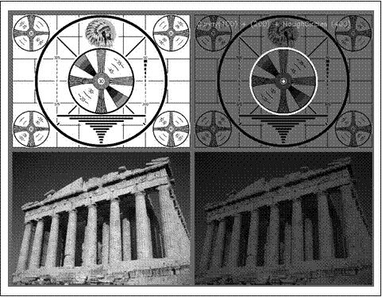
图6-12：霍夫圆变换可以在测试图案中找到圆但在照片中没有（正确）找到
这个实现可以使算法执行起来更快，或许更重要的是，能够帮助解决三维累加器中其他稀疏分布问题，这个问题会产生许多噪声并使结果不稳定。另一方面，这个算法有许多需要注意的缺点。
首先，使用Sobel导数计算局部梯度——随之而来的假设是这个可以看作等同于一条局部切线——并不是一个数值稳定做法。在大多数时间这个命题可能是真的，但你可能认为这样会在输出中产生一些噪声。
其次，在边缘图像中的整个非0像素集被认为是每个中心的候选。因此，如果把累加器的阈值设置偏低，算法将要消耗比较长的时间。第三，因为每一个中心只选择一个圆，如果有同心圆，就只能选择其中的一个。
最后，因为中心是被认为是按照与其相关联的累加器的值升序排列的，并且如果新的中心过于接近以前接受的中心将不会被保留。这里有一个倾向就是当有许多同心圆或者是
近似同心圆时，保留最大的一个圆。（只是个“偏见”，因为从Sobel导数产生了噪声；若是在无穷分辨率的平滑图像，这才是确定的）。
把所有以上的情况记录在大脑内，接下来看OpenCV程序能为我们做的：
CvSeq* cvHoughCircles(
CvArr* image,
void* circle_storage,
int method,
double dp,
double min_dist,
double param1 = 100,
double param2 = 300,
int min_radius = 0,
int max_radius = 0
);
霍夫圆变换函数cvHoughCircles()与直线变换有相似的变量。输入的image也是8位的。cvHoughCircles()与cvHoughLines2()一个明显的不同是后者需要二值图像。cvHoughCircles()函数将会在内部（自动）调用cvSobel()，所以可以提供更加普通的灰度图。
circle_storage既可以是数组，也可以是内存存储器（memory storage），这取决于我们希望返回什么结果。如果使用数组，则应该是CV_32FC3类型的单列数组，三个通道分别存储圆的位置及其半径。如果使用内存存储器（memory storage），圆将会变成OpenCV的一个序列CvSeq，由cvHoughCircles()返回一个指向这个序列的指针（给定一个指向圆存储的数组指针值，cvHoughCircles()的返回值将为空）。在这个方法中，参数必须设置为CV_HOUGH_GRADIENT。
参数dp是指累加器图像的分辨率。这个参数允许创建一个比输入图像分辨率低的累加器。（这样做是因为没有理由认为图像中存在的圆会自然降低到与图像宽高相同数量的范畴）。如果dp设置为1时，则分辨率是相同的；如果设置为更大的值（比如2），累加器的分辨率受此影响会变小（此情况下为一半）。dp的值不能比1小。
参数min_dist是让算法能明显区分的两个不同圆之间的最小距离。
当方法（现在必须的）设置成CV_HOUGH_GRADIENT时，后面的两个参数param1和param2分别是边缘阈值（Canny）和累加器阈值。Canny边缘检测实际上本身只用到两个不同的阈值。当内部调用cvCanny()时，第一个（高的）阈值被设成输入到cvHoughCircles()的
Param1，第二个（低的）阈值被严格设为此值的一半。param2是用作累加器的阈值恰好与cvHoughLines()的阈值参数类似。
最后两个参数是所能发现的圆半径的最小值和最大值。这就意味着累加器中圆的半径具有代表性。例6-1展示了利用cvHoughCircles()的示例程序。
例6-1：使用cvHoughCircles返回在灰度图中找到的圆序列
int main(int argc, char** argv){
IplImage* image = cvLoadImage(
"E:\\Pictures\\3ef1dc34c646f1f43.jpg", CV_LOAD_IMAGE_GRAYSCALE
);
CvMemStorage* storage = cvCreateMemStorage(0);
cvSmooth(image, image, CV_GAUSSIAN, 5, 5);
CvSeq* results = cvHoughCircles(
image,
storage,
CV_HOUGH_GRADIENT,
2,
image->width/10
);
for(int i = 0; i<results->total; i++){
float* p = (float*)cvGetSeqElem(results, i);
CvPoint pt = cvPoint(cvRound(p[0]), cvRound(p[1]));
cvCircle(
image,
pt,
cvRound(p[2]),
CV_RGB(0xff, 0xff, 0xff)
);
}
cvNamedWindow("cvHoughCircles", 1);
cvShowImage("cvHoughCircles", image);
cvWaitKey(0);
}
现在值得考虑的一个事实是，不管我们用什么技巧，都不能绕过圆必须被描述成三个自由度的需求（r, y和r），与此形成对比的是直线只需要两个自由度。
必然出现的结果是寻找圆的算法比我们以前看到的寻找直线的算法需要更多的内存和计算量。考虑到这一点，为了让这些消耗能在掌控之内，在环境允许范围内牢固的限制半径参数是一个好的主意。通过考虑物体是梯度边缘的集合，1981年Ballard[Ballard81]将霍夫圆变换拓展到任意形状。
重映射
在幕后，许多变换都有一个共同点。具体说来，它们会把一幅图像中一个位置的像素映射到另一个位置。在这种情况下，就始终需要一些平滑的映射（我们希望实现的），但并不总是能做到像素一一对应。
我们有时想以编程方式完成这类插值，即想用一些已知的算法来确定映射。然而在其他一些情况下，我们想自定义映射。在深入计算映射的方法之前，我们首先看一下其他方法所依赖的可解决映射问题的函数。在OpenCV程序中，这样的函数是cvRemap()：
void cvRemap(
const CvArr* src,
CvArr* dst,
const CvArr* mapx,
const CvArr* mapy,
int flags = CV_INTER_LINEAR|CV_WARP_FILL_OUTLIERS,
CvScalar fillval = cvScalarAll(0)
);
cvRemap()的前两个参数分别是源图像和目标图像。显然它们的大小和通道数必须相同，但可以是任意的数据类型。重要的是要知道它们不一定是同一幅图像。后两个参数mapx和mapy指明任意具体像素重新分配的位置。它们应该与源图像和目标图像的大小相同，但为单通道并且通常是浮点类型（IPL_DEPTH_32F）。
非整型映射确定后，cvRemap()将会自动计算插值。cvRemap()的一个通常的用途是校正（纠正失真）标定和立体的图像。我们将在第11章和第12章看到这些函数，这些函数计算摄像机失真并且排列为mapx和mapy参数。最后一个参数包括一个标志位flags，明确告诉cvRemap()插值如何进行。表6-1中给出的所有值都可用。
表6-1：cvWarpAffine()附加标志位的值
标志位的值 |
意义 |
CV_INTER_NN |
最近邻 |
CV_INTER_LINEAR |
双线性（默认） |
CV_INTER_AREA |
像素区域重新采样 |
CV_INTER_CUBIC |
双三次插值 |
在这里，插值是一个很重要的问题。源图像的像素在整
数网格内，例如，我们可以说像素位于（20, 17）的位置。当这些整数位置映射到新的图像中时，可能会有一些差异——源图像中像素的位置是整型的而目标图像是浮点型的，就必须将其四舍五入到最相近的整型，因为可能映射后的位置完全就是没有像素的（联想一下通过拉伸将图像扩大两倍，其他的每一个目标像素将会是空白）。这些问题一般被称为正投影问题。为了解决这些四舍五入和目标差异的问题，实际上我们可以反过来解决：通过目标图像中的每一个像素去问：“哪个像素需要来填补这个目标像素？”这些源像素的位置几乎都是小数（非整数），所以必须对这些源像素进行插值以得到目标位置的正确值。默认方法是双线性插值，但也可以选择其他方法（如表6-1所示）。
也可以增加（用或操作）标志位CV_WARP_FILL_OUTLIERS，
其效果是可以用最后一个变量fillval设置的值填充目标图像的像素，而这些像素在原始输入图像中没有任意像素与之对应。通过这种方式，如果将所有图映射到一个位于中心的圆里，圆的外面会自动填充成黑色（或者你想象的任意颜色）。
拉伸、收缩、扭曲和旋转
本小节介绍图像的几何操作。这些操作包括各种各方式的拉伸，包括一致性缩放和非一致性缩放（后者被称为扭曲）。有很多理由来执行这些操作：例如，扭曲和旋转一幅图像使得它可以叠加在场景中的墙上，或者人为地扩大一组训练图像用于物体识别。这些拉伸、扭曲、旋转图像的函数叫做几何转换函数（早期的阐述见[Semple79]）。对于平面区域，有两种方式的几何转换：一种是基于2×3矩阵进行的变换，也叫仿射变换；另一种是基于3×3矩阵的变换，又称透视变换或者单
应性映射。可以把后一种变换当作一个三维平面被一个特定观察者感知的计算方法，而该观察者也许不是垂直观测该平面。
一个任意的仿射变换可以表述为乘以一个矩阵再加上一个向量的形式。在OpenCV里，代表这种变换的标准形式是2×3矩阵。定义如下：
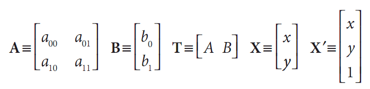
容易看出，放射变换A.X+B在效果上就等于将向量X拓展成X’，并且只是将X’左乘T。
仿射变换可以形象地表示成以下形式。一个平面内的任意平行四边形ABCD可以被仿射变换映射为另一个平行四边形A’B’C’D’。如果这些平行四边形的面积不等于0，这个隐含的仿射变换就被这两个平行四边形（其中的
三个顶点）唯一定义。如果愿意愿意，可以将仿射变换想象成把一幅图像画到一个胶版上，在胶版的角上推或拉以使其变形而得到不同类型的平行四边形。
当有多幅图像时，我们知道在不同角度观察相同的物体会略有不同，所以可能希望计算在不同角度下的实际变换时会与不同的视觉有一些关系。在这种情况下，放射变换通常用单应性（homography）建模，这是因为其参数少，有利于问题的解决。它的缺点是真正投影畸变只能通过单应性建模来解决，所以仿射变换所产生的表示并不能适应视角间所有的关系。另一方面，由视角微小的变化导致的失真就是仿射，所以在有些环境下，放射变换也许够用了。
放射变换可以将矩阵转换成平行四边形。它可以将矩形的边压扁但必须保持边是平行的，也可以将矩形旋转
或者按比例变化。透视变换提供了更大的灵活性，一个透视变换可以将矩形转变成梯形。当然，因为平行四边形也是梯形，所以放射变换是透视变换的子集。图6-13展示了各种放射变换和透视变换的例子。
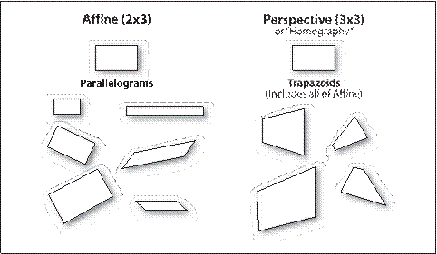
图6-13:仿射变换和透视变换
仿射变换
有两种情况会用到仿射变换。第一种是有一幅想要转换的图像（或者感兴趣区域），第二种是我们有一个点序列并想以此计算出变换。
稠密仿射变换
在第一种情况下，很明显输入/输出的格式是图像，并且隐含的要求是扭曲假设对于所使用的图像，其像素必须是其稠密的表现形式。这意味着图像扭曲必须进行一些插值运算以使输出的图像平滑并且看起来自然一些。OpenCV中为稠密变换提供的转换函数是cvWarpAffine()。
void cvWarpAffine(
const CvArr* src,
CvArr* dst,
const CvMat* map_matrix,
int flags = CV_INTER_LINEAR |
CV_WARP_FILL_OUTLIERS,
CvScalar fillval = cvScalarAll(0)
);
这里src和dst表示数组或图像，它们可为单通道或三通道的任意类型（假定它们大小和类型是相同的）。map_matrix是一个我们前面介绍过的对所需要的变换进行量化的2×3矩阵。倒数第二个参数flags控制插值的方法以及下面一个或两个附加选项（通常用布尔或操作来组合）。
• CV_WARP_FILL_OUTLIERS 通常，变换的src图像不能和dst图像完美匹配——从源图像映射的像素可能实际上 并不存在。如果设置了标志位，这些失去的值就会由fillval补充（前面已经介绍）。
• CV_WARP_INVERSE_MAP 这个标志位用于方便地进行从dst到src的逆向变形，而不是从src到dst的变换。
cvWarpAffine的性能
有必要知道cvWarpAffine()涉及开销问题。另一种方法是利用cvGetQuadrangleSubPix()。这个函数的选项更少但优点更多。尤其是，它的开销比较小而且可以处理源图像是8位而目标图像是32位浮点图像的特殊情况。同时它能处理多通道图像。
void cvGetQuadrangleSubPix(
const CvArr* src,
CvArr* dst,
const CvMat* map_matrix
);
cvGetQuadrangleSubPix()所做的就是计算从src图像的点（通过插值）映射到dst图像上的所有的点，这个映射是通过仿射变换即乘一个2×3矩阵实现的。（目标图像的位置乘以齐次坐标是自动完成的）。
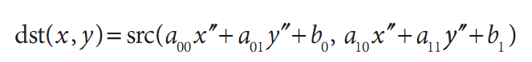
cvGetQuadrangleSubPix()的一个特定是函数提供了附加映射。具体来说，目标图像中点的结果是通过下式计算的：
其中：
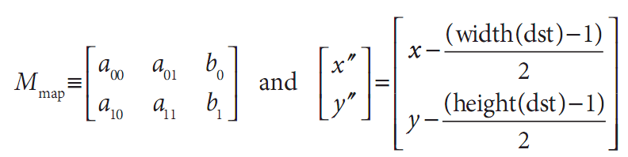
观察到从(x, y)到(x’’,y’’)的映射产生的效果是——即使映射M是恒等映射——目标图像中心点会从原点的源图像获得。如果cvGetQuadrangleSubPix()需要图像外面的点，它会利用复制来重构这些值。
仿射映射矩阵的计算
OpenCV提供了两个函数以帮助生成映射矩阵map_matrix。如果已有两幅图像要通过仿射变换发生关联或希望以那种方式来逼近则可以使用第一个函数如下所示：
CvMat* cvGetAffineTransform(
const CvPoint2D32f* pts_src,
const CvPoint2D32f* pts_dst,
CvMat* map_matrix
);
这里src和dst是包含三个二维点(x, y)的数组，map_matrix所表示的放射变换就是通过这些点来计算。
cvGetAffineTransform()中的pts_src和pts_dst是其中包含三个点的数组，它们定义了两个平行四边形。描述仿射
变换的简单方法是把pts_src设置为源图像的三个角——例如，源图像的左上角和左下角以及右上角。从源图像到目标图像的映射完全由特定的pts_dst定义，这三个点的位置将会被映射到目标图像。一旦这三个独立点（实际上是指定一个“有代表性”的平行四边形）的映射完成，所有其他点会依次变形。
例6-2显示了使用这些函数的一些代码。在这个例子里，我们首先通过创建点（我们表示平行四边形的顶点）的两个三元数组，然后利用cvGetAffineTransform()将其转换为具体的变换矩阵，从而得到cvWarpAffine()的矩阵参数。接下来，做一次仿射变换，紧接着将图像旋转。对代表源图像点的数组被称为srcTri[]的点集，我们提取其中的三个点：(0, 0), (0, height-1)和(width – 1, 0)。接着我们指定位置，这些点会在相应数组srcTri[]
中被映射到这些位置。
例6-2：放射变换
int main(int argc, char** argv)
{
CvPoint2D32f srcTri[3], dstTri[3];
CvMat* rot_mat = cvCreateMat(2, 3, CV_32FC1);
CvMat* warp_mat = cvCreateMat(2, 3, CV_32FC1);
IplImage *src, *dst;
if(((src=cvLoadImage("E:\\Pictures\\man.jpg", 1))!=0)){ //argc==2&&
dst = cvCloneImage(src);
dst->origin = src->origin;
cvZero(dst);
//Compute warp matrix
srcTri[0].x = 0;
srcTri[0].y = 0;
srcTri[1].x = src->width - 1;
srcTri[1].y = 0;
srcTri[2].x = 0;
srcTri[2].y = src->height - 1;
dstTri[0].x = src->width*0.0;
dstTri[0].y = src->height*0.33;
dstTri[1].x = src->width*0.85;
dstTri[1].y = src->height*0.25;
dstTri[2].x = src->width*0.15;
dstTri[2].y = src->height*0.7;
cvGetAffineTransform(srcTri, dstTri, warp_mat);
cvWarpAffine(src, dst, warp_mat);
cvCopy(dst, src);
//Compute rotation matrix
CvPoint2D32f center = cvPoint2D32f(
src->width/2,
src->height/2
);
double angle = -50.0;
double scale = 0.6;
cv2DRotationMatrix(center, angle, scale, rot_mat);
//Do the transformation
cvWarpAffine(src, dst, rot_mat);
cvNamedWindow("Affine_Transform", 1);
cvShowImage("Affine_Transform", dst);
cvWaitKey();
}
cvReleaseImage(&dst);
cvReleaseMat(&rot_mat);
}
计算map_matrix的第二种方法是用cv2DRotationMatrix()，它用来计算围绕任意点的旋转的映射矩阵和一个可选择的尺度。虽然这只是放射变换可能出现的一种，但代表一个重要的子集，有一个我们更容易理解的替代（且更直观）的表示：
CvMat* cv2DRotationMatrix(
CvPoint2D32f center,
double angle,
double scale,
CvMat* map_matrix
);
第一个参数center是旋转中心。第2和3个参数给出了旋转的角度和缩放尺度。最后一个参数map_matrix是输出的映射矩阵，总是一个浮点类型的2×3矩阵。
如果我们定义α=scale.cos(angle)和β=scale.sin(angle)，那么该函数将如下计算map_matrix：
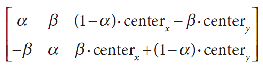
可以结合使用这些设置map_matrix的方法获得图像的旋转、缩放或变形效果，例如，一幅旋转，缩放并且扭曲的图像。
稀疏仿射变换
如前所述，cvWarpAffine()是解决密集映射的正确方法。对于稀疏映射（例如，对一系列独立点的映射），最好的办法是用cvTransform()：
void cvTransform(
const CvArr* src,
CvArr* dst,
const CvMat* transmat,
const CvMat* shiftvec = NULL
);
一般情况下，src是Ds通道，N×1的数组，N是将要转换的点的数量，Ds是这些源图像点的维数。输出的目标数组dst必须相同大小但可以有不同的通道数Dd。转换矩阵transmat是一个Ds×Dd的矩阵，被应用到源图像的每一个元素，结果被置入dst中。可选向量shiftvec，如果非空，则必须是一个Ds×1的数组，在结果被置入目标图像之前将其加到dst中。
在前面仿射变换的例子中，cvTransform()有两种用法，
如何选择取决于我们想如何表达我们的转换。第一种方法中，我们将变换分解成2×2部分（完成旋转，缩放和扭曲）以及2×1部分（完成转换）。这里我们的输入是一个二通道的N×1的数组，transmat是我们的局部齐次变换，shiftvec包括一些需要的位移。第二种方法是利用我们通常的2×3形式的仿射变换。在这种情况下，输入数组src是一个3通道数组，其中我们必须将全部第三个通道的元素设为1。（例如，这些点必须在齐次坐标里提供）。当然，输出数组仍将是2通道数组。
透视变换
为了获得透视变换（单应性）所提供的更大灵活性，我们需要一个新的函数，使之能实现广泛意义上的变换。首先我们注意到，即使一个透视投影由一个单独矩阵完全确定，但这个投影实际上并不是线性变换。这是因为变换需要与最后一维（通常是Z，见第11章）元素相除，因此在过程中会失去一维。
与仿射变换一样，图像操作（密集变换）是由不同的函数来处理的相较于点集变换（稀疏变换）所用的函数，而不是通过对点集的变换（稀疏变换）。
密集透视变换
密集透视变换用到的OpenCV函数与提供的密集仿射变换是类似的。特别地，cvWarpPerspective()的参数与cvWarpAffine()相同，但是有一个小的但很重要的区别是所采用的映射矩阵必须是3×3的。
void cvWarpPerspective(
const CvArr* src,
CvArr* dst,
const CvMat* map_matrix,
int flags = CV_INTER_LINEAR + CV_WARP_FILL_OUTLIERS,
CvScalar fillval = cvScalarAll(0)
);
这里的标志与仿射情形的一样。
计算透视映射矩阵
对于仿射变换，在前面的代码里，针对在代码执行期间填充map_matrix，我们有一个方便的函数，可以通过对应点列表计算变换矩阵：
CvMat* cvGetPerspectiveTransform(
const CvPoint2D32f* pts_src,
const CvPoint2D32f* pts_dst,
CvMat* map_matrix
);
这里pts_src和pts_dst是四个点的数组（而不是三个），所以我们能独立地控制如何将pts_src中矩形的（典型的）四个角映射到pts_dst中的普通菱形上。我们的变换完全由源图像上的四个点所指定的目标定义。如前所述，对透视变换，我们必须为map_matrix分配一个2×3数组，见例6-3的代码。除了3×3矩阵和三个控
点变为四个控点外，透视变换在其他方面与仿射变换完全类似。
例6-3：透视变换代码
int main(int argc, char** argv){
CvPoint2D32f srcQuad[4], dstQuad[4]; //源点数组和目标点数组
CvMat* warp_matrix = cvCreateMat(3, 3, CV_32FC1);
IplImage *src, *dst;
if(((src=cvLoadImage("E:\\Pictures\\man.jpg", 1))!=0)){ //argc==2 &&
dst = cvCloneImage(src);
dst->origin = src->origin;
cvZero(dst);
srcQuad[0].x = 0; //src Top left
srcQuad[0].y = 0;
srcQuad[1].x = src->width - 1; //src Top right
srcQuad[1].y = 0;
srcQuad[2].x = 0; //src Bottom left
srcQuad[2].y = src->height - 1;
srcQuad[3].x = src->width - 1; // src Bot right
srcQuad[3].y = src->height - 1;
dstQuad[0].x = src->width*0.05; //dst Top left
dstQuad[0].y = src->height*0.33;
dstQuad[1].x = src->width*0.9; //dst Top right
dstQuad[1].y = src->height*0.25;
dstQuad[2].x = src->width*0.2; //dst Bottom left
dstQuad[2].y = src->height*0.7;
dstQuad[3].x = src->width*0.8; //dst Bot right
dstQuad[3].y = src->height*0.9;
cvGetPerspectiveTransform(
srcQuad,
dstQuad,
warp_matrix
);
cvWarpPerspective(src, dst, warp_matrix);
cvNamedWindow("Perspective_Warp", 1);
cvShowImage("Perspective_Warp", dst);
cvWaitKey();
}
cvReleaseImage(&dst);
cvReleaseMat(&warp_matrix);
return 0;
}
稀疏透视变换
这里有一个特殊函数cvPerspectiveTransform()，在一系列的点上完成透视变换。我们不能用cvTransform()，因为它只局限于线性操作。因为如此，它不能处理透视变换因为透视变换需要齐次表达式的第三坐标来除各项（x=f*X/Z, y=f*Y/Z）。这个特殊的函数cvPerspectiveTransform()需要引起注意。
void cvPerspectiveTransform(
const CvArr* src,
CvArr* dst,
const CvMat* mat
);
通常，src和dst参数（分别）是被变换的原始点数组以
及目标点数组。这些数组必须是三通道、浮点类型的。矩阵mat既可以是3×3的，也可以是4×4的。如果为3×3，便投影从2维变成2维；如果是4×4的，投影就是从4维变成3维。
当然，我们是将一幅图像中的点集转换成另一幅图的点集，听起来类似于将两维映射到另外两维。但这并不是很准确的，因为透视变换实际上是一个嵌入在三维空间的二维平面上的实际映射点映射回一个不同的二维子空间。把这个情况想象为摄像机的行为（后文后讨论到摄像机时我们将详细讨论）。摄像机得到三维空间的点，然后利用摄像机成像仪将其映射到二维空间。这实际上是当原始点必须采取“齐次坐标”时的意思。我们为这些点增加额外的一维，即引入Z维，并将所有Z的值设为1。投影变换然后将该空间反投影
到我们输出的二维空间。这里我们用相当大的篇幅解释了当一个点从一幅图映射到另一幅图，为何需要一个3×3矩阵的原因。
图6-14显示出例6-3中代码对放射变换和投影变换的输出。将此结果与图6-13对比，看看它是如何作用于实际图像的。在图6-14中，我们转换了整个图像。但这并不是必须的。我们只需要用src_pts来定义源图像中一个小（或大）的区域用来转换就行。也可以用源图像或者目标图像的ROI区域来限制这个转换。
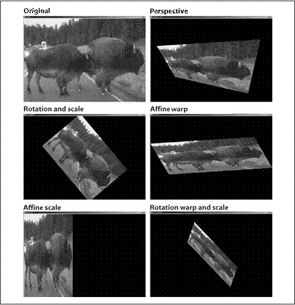
图6-14：一幅图像的透视变换和仿射变换
CartToPolar与PolarToCart
函数cvCartToPolar()和cvPolarToCart()会被一些更加复杂的例程诸如cvLogPolar()()用到，但它们本身也是有用的。这些函数将数值在笛卡儿(x, y)空间和极性或者径向(r, θ)空间之间进行映射。(例如，从笛卡儿坐标到极坐标或相反)。函数格式如下：
void cvCartToPolar(
const CvArr* x,
const CvArr* y,
CvArr* magnitude,
CvArr* angle = NULL,
int angle_in_degrees = 0
);
void cvPolarToCart(
const CvArr* magnitude,
const CvArr* angle,
CvArr* x,
CvArr* y,
int angle_in_degrees = 0
);
在这些函数中，前两个二维数组或者图像是输入，后两个是输出。如果输出指针设为空，它将不会被计算。这些数组必须为浮点或者双精度且是相互匹配的（大小、通道数和类型）。最后一个参数指定是用角度（0, 360）还是用弧度（0, 2π）计算。
这里给出一个可能用到此函数的例子。假定已经对图像的x和y方向求导，要么使用cvSoble()，要么使用
cvDFT()或cvFilter2D()做卷积运算。如果将图像的x方向导数存储于dx_img而将y方向导数存储于dy_img，那么就可以创建一个边缘-角度识别直方图。就是说，你可以收集所有的角度，假定边缘像素的幅值或强度在一定阈值之上。为了计算它们，我们创建了两个类型一致（整型或浮点型）的目标图像作为求导图像并且调用img_mag和img_angle。如果想让结果以角度返回，可以用函数vCartToPolar(dx_img, dy_img, img_mag, img_angle, 1)。
LogPolar
对于二维图像，Log-polar转换[Schwartz80]表示从笛卡儿坐标到极坐标的变换。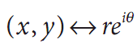，其中
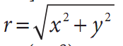并且exp(iθ)=exp(i.arctan(y/x))为了将极坐标分离到a(ρ, θ)空间，而这又与一些中心点(xc, yc)有关，我们用对数运算，于是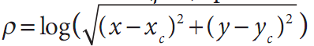并且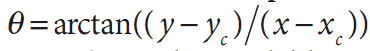出于图像的考虑——当需要将感兴趣的元素“填充”到图像缓存中——我们应用一个缩放比例m到ρ。图6-15左边显示了一个正方形对象以及其在极坐标系的编码。
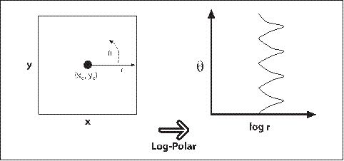
图6-15：从(x, y)到(log(r), θ)映射的对数极坐标变换；正方形
下一个问题自然是“为什么要如此费事？”对数极坐标变换的灵感来自人的视觉系统。你眼睛的中心有一个小但很密集的光感受器（中央凹），并且受体的密度从这里快速（指数级）下降。尝试着盯着墙上的一个
污点，在你的视线中以手臂的长度举着你的手指。接下来，保持对污点的凝视并且缓慢移动你的手指，在手指从你的中央凹移动开的时候，注意到图像的细节迅速下降。这个结构同时也有一个相当优美的数学性质（在本书范围之外）即关注保留交叉线段的角度。
对我们来说更重要的是，对数极坐标变换是对物体视场的一种不变表示，即当变换图像的质心移动到对数极坐标平面的某个固定点时。见图6-16，左边是三个我们想要识别成“正方形的”形状。问题是它们看起来很不一样。
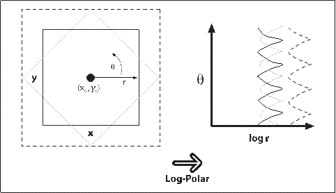
图6-16：旋转和缩放正方形的对数极坐标变换：尺寸转到log(r)轴的位移，旋转转到θ轴的位移
有一个比其余的大很多而另一个是旋转的。对数极坐标变换见图6-16的右侧。观察到在(x, y)平面内尺寸的差异被旋换为对数极坐标平面内沿着log(r)轴的位移，旋转差异被转移成对数极坐标平面沿θ轴的位移。如果我们将对数极坐标平面上每一个变换方形的转换中心，重新移动一个固定的中心位置，那么所有正方形都是一样的。这就产生了一类二维旋转和缩放的不变性。
OpenCV中对于对数极坐标转换的函数是cvLogPolar():
void cvLogPolar(
const CvArr* src,
CvArr* dst,
CvPoint2D32f center,
double m,
int flags = CV_INTER_LINEAR|CV_WARP_FILL_OUTLIERS;
);
src和dst是单通道或三通道的彩色或灰色图像。参数center是对数极坐标变换的中心点（xc, yc）；m是缩放比例，它应被事先设置使得感兴趣的特征在可用的图像区域内占主导。插值方法的设置与OpenCV提供的标准插值方法是一致的（表6-1）。这些插值方法可以与标志位CV_WARP_FILL_OUTLIERS(填充点否则会未定义)和CV_WARP_INVERSE_MAP(计算从对数极坐标到笛卡儿坐标的逆向映射)中的一个或者二者结合使用。
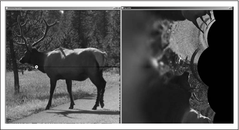
图6-17：一个对数极变换的例子，左图是变换的中心（在麋鹿上的白圈上），右图是输出结果
例6-4给出了对数极变换的一些代码示例，论证了向前和向后（逆向）对数极坐标变换。图6-17显示了对于一幅摄影图像的变换结果。
例6-4：对数极变换示例
int main(int argc, char** argv){
IplImage* src;
double M;
if(((src=cvLoadImage("E:\\Pictures\\man.jpg", 1))!=0)){//argc == 3&& //3个参数？
M = atof("2.5");//argv[2]
IplImage* dst = cvCreateImage(cvGetSize(src), 8, 3);
IplImage* src2 = cvCreateImage(cvGetSize(src), 8, 3);
cvLogPolar(
src,
dst,
cvPoint2D32f(src->width/4, src->height/2),
M,
CV_INTER_LINEAR+CV_WARP_FILL_OUTLIERS
);
cvLogPolar(
dst,
src2,
cvPoint2D32f(src->width/4, src->height/2),
M,
CV_INTER_LINEAR|CV_WARP_INVERSE_MAP
);
cvNamedWindow("log-polar", 1);
cvShowImage("log-polar", dst);
cvNamedWindow("inverse log-polar", 1);
cvShowImage("inverse log-polar", src2);
cvWaitKey();
}
return 0;
}
离散傅里叶变换(DFT)
对任意通过离散（整型）参数索引的数值集合，都可能用类似于连续函数的傅里叶变换的形式定义一个离散傅里叶变换（DFT）。对于N个复数：x0,…,xN,…一维的DFT定义为下式（其中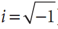）：
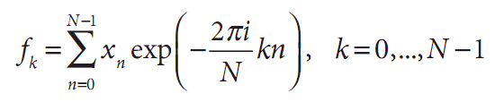
对于二维数组（当然高维也相似），也可定义类似的变换：
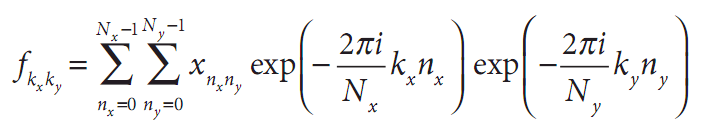
通常，人们可能估计N个不同的项fk需要O(N^2)次操作的计算量。实际上，这里有许多快速傅里叶算法（FFT）能够以O(NlogN)的时间复杂度计算这些值。OpenCV函数cvDFT()实现了这样的FFT算法。函数cvDFT()可以计算输入是一维或二维数组时的FFT。在后一种情况下，则是计算二维数组的傅里叶变换，如果必要，可以对数组的每一行做一维变换（这个操作比单独多次调用cvDFT()快许多）。
void cvDFT(
const CvArr* src,
CvArr* dst,
int flags,
int nonzero_rows=0
);
输入数组和输出数组必须是浮点类型并且通常是单通道或双通道。对单通道情形，输入被设定为实数，输出封装了一种节省空间的格式（从同样是IplImage格式的旧IPL库里继承来的）。如果源图像和通道是双通道矩阵或图像，这两个通道会被解释成输入数据的实部和虚部。在这种情形下，结果将没有特殊的封装，在输入和输出数组中，一些有许多0的空间会被浪费。
这个单通道输出用到的特殊封装结果值如下。
对于一维数组：
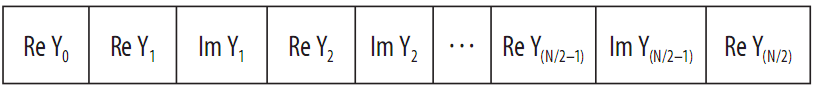
对于二维数组：
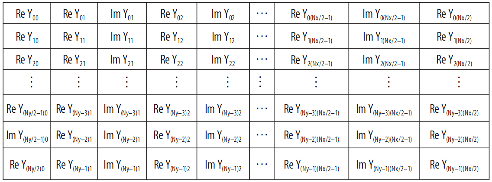
需要花些时间仔细研究这些数组的下标。这里的问题是某些值必须保证是0（更准确的是，fk的某些值必须保证是实数）。还必须注意，表中最后一行和最后一列分别只有在Ny和Nx是奇数时才会出现。（在二维数组的情况下，其被看成是Ny一维数组而不是完整的二维数组，所有结果行将与一维数组中输出的单独一行类似）。
第三个参数称为flags，明确指出要进行什么操作。开始的变换称为正变换，选择的标志位是CV_DXT_FORWARD。除了指数的符号和缩放比例有变化外，逆变换的定义方式几乎相同。为了执行没有缩放比例的变换，要用到CV_DXT_INVERSE标志位。缩放比例的标志位是CV_DXT_SCALE，输出的结果都被比例1/N缩放（二维变转换是1/Nx Ny）。如果对序列应用
正变换，然后用逆变换回到初始的位置，那么这个缩放是必须的。由于经常把CV_DXT_INVERSE和CV_DXT_SCALE结合起来使用，所以对这样的操作有许多速记符号。另外除了刚才使用“或”将这两个操作结合起来之外，也可以用CV_DX_INV_SCALE(如果手边必备的不用那个简短的方式，可以用CV_DXT_INVERSE_SCALE)。最后一个想随手使用的标志位是CV_DXT_ROWS，它告诉cvDFT()将一个二维数组看做一维数组的集合，即把它们看成长为Nx的Ny个不同的一维向量分别进行转换。这大大减少了变换的系统开销（特别是用英特尔的优化库IPP时）。通过用CV_DXT_ROWS，可能实现对三维（或者更高）DFT的转换。
为了理解最后一个参数nonzero_rows，我们必须先偏离
一下正题。通常情况下，DFT算法特别喜欢用一些有特殊长度的向量或者特殊尺寸的数组。在大多数DFT算法中，首选的尺寸是2的幂次（一些整型数n的2n次幂）。当OpenCV使用该算法时，首选的向量长度或者说数组维数为2 3 5 ，p，qr是指数。因此，常用方法是创建一个稍微大一些的数组（有一个很好用的函数cvGetOptimalDFTSize()可达此目的，它获取向量的长度，返回一个相等或较大的合适尺寸值），接下来用cvGetSubRect()，将数组复制到这个比较大些的0填充的数组中。尽管需要这样的填充，还是有可能向cvDFT()表示你并不在意这些必须添加实际数据的行的转换（或者，如果正在做逆变换，则不在意结果中的行）。在这两种情况下，可以用nonzero_rows来指明有多少行可以被安全地忽略。这样做可以节省一些计算时间。
频谱乘法
在许多包含计算DFT的应用中，还必须将两个频谱中的每个元素分别相乘。由于DFT的结果是以其特殊的高密度格式封装，并且通常是复数，解除它们的封装以及通过“普通”矩阵操作来进行乘法运算是很乏味的。幸运的是，OpenCV提供了一个很方便的程序cvMulSpectrums()，它可以准确执行这个函数以及执行一些其他方便的事情。
void cvMulSpectrums(
const CvArr* src1,
const CvArr* src2,
CvArr* dst,
int flags
);
注意，前两个输入变量是常见的输入数组，尽管这里下它们是被cvDFT()调用的频谱。第三个参数必须是一个数组的指针——与前两个类型大小一致——将用于结果中。最后一个参数flags，告诉cvMulSpectrums()想做什么。具体而言，执行上面两个乘法时，它可以设为0CV_DXT_FORWARD)，如果第一个数组的元素与第二个数组的对应元素为复共轭时，它可以被设为CV_DXT_MUL_CON0。如果每一个数组行0被看作是单独的频谱，在二维情况下，这个标志位也可以与CV_DXT_ROWS组合。（记住，如果用CV_DXT_ROWS创建一个频谱数组，封装数据与不用这个函数创建有一些轻微的不同，所以必须坚持这种调用cvMulSpectrums的方法）。
卷积和DFT
利用DFT可以大大加快卷积运算的速度[Titchmarsh26]，因为卷积定理说明空间域的卷积运算可以转换为频域的乘法运算[Morse53; Bracewell65; Arfken85]。为了完成这个任务，首先计算图像的傅里叶变换，接着计算卷积滤波器的傅里叶变换。一旦完成这个，可以在变换域中以相对于图像像素数目的线性时间内进行卷积运算。值得看此类卷积运算的源代码，它也将为我们提供许多cvDFT()的用法范例。见例6-5，直接取自OpenCV参考文档。
例6-5：用cvDFT()加快卷积的计算
//通过卷积核B使用DFT加速A的卷积
void speedy_convolution(
const CvMat* A, //Size:M1xN1:
const CvMat* B, //Size:M2xN2
CvMat* C //Size:(A->rows+B->rows-1)x(A->cols+B->cols-1)
){
int dft_M = cvGetOptimalDFTSize(A->rows+B->rows-1);
int dft_N = cvGetOptimalDFTSize(A->cols+B->cols-1);
CvMat* dft_A = cvCreateMat(dft_M, dft_N, A->type);
CvMat* dft_B = cvCreateMat(dft_M, dft_N, B->type);
CvMat tmp;
//复制A到dft_A，并将dft_A用0填充
cvGetSubRect(dft_A, &tmp, cvRect(0, 0, A->cols, A->rows));
cvCopy(A, &tmp);
cvGetSubRect(
dft_A,
&tmp,
cvRect(A->cols, 0, dft_A->cols-A->cols, A->rows)
);
cvZero(&tmp);
//不需用0填充dft_A的底部部分因为在cvDFT()中使用nonzero_rows参数如下所示
cvDFT(dft_A, dft_A, CV_DXT_FORWARD, A->rows);
//使用第二个array来重复相同的操作
cvGetSubRect(dft_B, &tmp, cvRect(0, 0, B->cols, B->rows));
cvCopy(B, &tmp);
cvGetSubRect(
dft_B,
&tmp,
cvRect(B->cols, 0, dft_B->cols-B->cols, B->rows)
);
cvZero(&tmp);
//不需要在dft_B的底部部分填充0，因为在cvDFT()中使用nonzero_rows参数如下所示
cvDFT(dft_B, dft_B, CV_DXT_FORWARD, B->rows);
//或者CV_DXT_MUL_CONJ来得到关联而非卷积
cvMulSpectrums(dft_A, dft_B, dft_A, 0);
//只计算上部分
cvDFT(dft_A, dft_A, CV_DXT_INV_SCALE, C->rows);
cvGetSubRect(dft_A, &tmp, cvRect(0, 0, conv->cols, C->rows));
cvCopy(&tmp, C);
cvReleaseMat(dft_A);
cvReleaseMat(dft_B);
}
在例6-5中，我们看到输入数组首先被创建并初始化。接下来，创建两个对于DFT算法维数最佳的新数组。原始数组被复制到新的数组，接着计算变换，最后，将所有频谱元素相乘，对乘积进行逆变换。FFT变换是这个操作里最慢的部分：一个NxN图像用O(N logN)的时间，所以整个过程也基本上是在这个时间内完成的（对于一个MxM的卷积核，假定N>M）。这个时间要比使用非DFT卷积所花费的时间O(N M )快很多。
离散余弦变换(DCT)
对于实数，通常计算离散傅里叶变换的一半就已经足够了。离散余弦变换（DCT）[Ahmed74;Jain77]与DFT类似，被定义为下式：
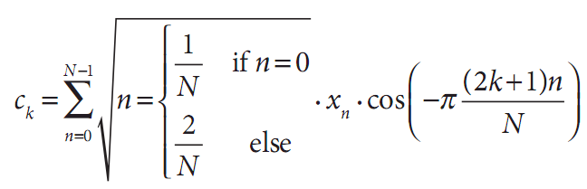
注意，通常，归一化比例可以同时应用于余弦变换和它的逆变换。当然，对于高维也有相似的变换。
把DFT的基本思想应用于DCT，但现在所有系数都是
实数。机敏的读者可能反对把余弦变换应用到向量，因为它不是一个明显的偶函数。然而，对于cvDCT()，算法只是简单地把向量做镜像处理，使之具有负的下标即可。
实际的OpenCV调用如下：
void cvDCT(
const CvArr* src,
CvArr* dst,
int flags
);
cvDCT()函数的预期参数与cvDFT()预期的一样，因为结果是实值的没有必要将结果数组以特殊形式封装（或者在逆变换里的输入数组）。flags参数可以设成CV_DXT_FORWARD或者CV_DXT_INVERSE，也可以与
CV_DXT_ROWS结合，效果与cvDFT()类似。因为采用了不同的归一化方式，所有的正向和逆向余弦变换通常都包含它们各自对变换整体归一化的贡献。因此CV_DXT_SCALE在cvDCT没有发挥作用。
积分图像
OpenCV可用于轻松计算积分图像，只要用一个具有相应名称cvIntegral()的函数。积分图[Viola04]是一个数据结构，可实现子区域的快速求和。这样的求和在许多应用中是很有用的，最显著的是在人脸识别及相关算法中应用的Haar小波（Haar wavelet）。
void cvIntegral(
const CvArr* image,
CvArr* sum,
CvArr* sqsum = NULL,
CvArr* titled_sum = NULL
);
cvIntegral()的参数是原始图像，也是结果中目标图像的指针。参数sum是需要的，其他的sqsum和tilted_sum如果需要也是可以提供（实际上，这些参数不一定是图像，可以使矩阵，但在实际上，它们通常都是图像）。当输入图像是8位无符号类型时，sqsum和tilted_sum可以是32位整型或浮点型数组。对于其他情况，sum和tilted_sum必须是浮点类型的（32位或者64位）。结果“images”必须始终是浮点型。如果输入图像大小是WxH，输出图像的大小必须为(W+1)x(H+1)。
积分图求和形式如下：
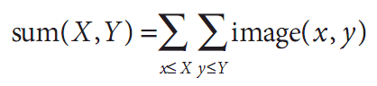
可选的sqsum图是和的平方如下：
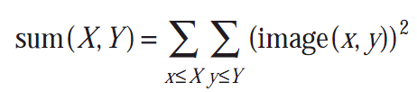
tilted_sum除了求和之外还将图像旋转了45度：
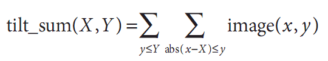
利用这些积分图，可以计算图像的任意直立或“倾斜”的矩形区域的之和、均值和标准差。例如一个简单的例子，计算一个简单矩形区域的和，这个区域是通过角点(x1, y1)和(x2, y2)定位的，这里x2>x1并且y2>y1，计算如下：
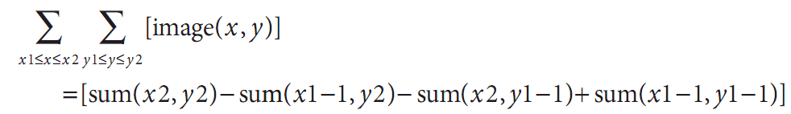
在这种方式下，就可能进行快速模糊、梯度估计、计算均值和标准差，甚至为各种窗口大小执行快速的可变窗块相关计算。
为了更加清晰地加以描述，考虑图6-18显示的7x5的图像，
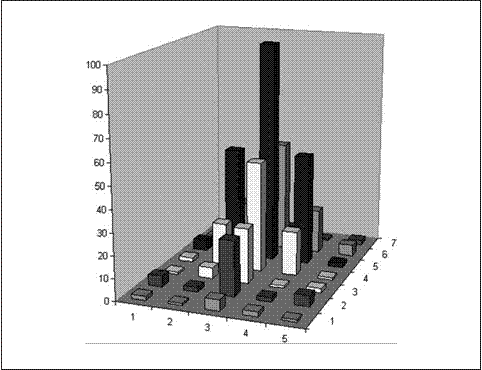
图6-18：简单的7 ×5图像，它的x,y和高等于像素值，以条形图的形式显示
这个区域以柱状图显示，高度代表关联的像素值的亮度。相同的信息显示在图6-19中，左边是数字形式，右边是积分形式。依次遍历每行计算积分图(I’)，利用前期
计算的积分图的值按行加上现在的原始图像（I）像素值I(x, y)来计算下一个积分图像值，如下；
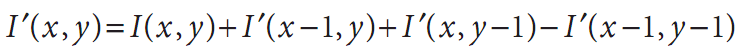
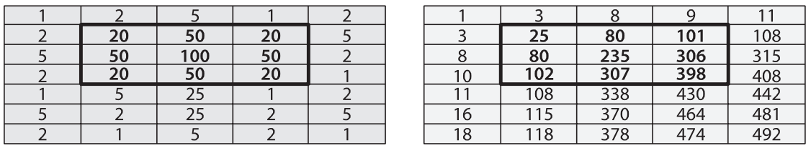
图6-19：左侧是用数字显示的是图6-18中的7×5图像（假定左上角是原点），右侧是转换的积分图像
最后一项是消减，因为这个值在加上第二和第三项时重复计数了。可以通过测试图6-19中的一些数据来加以验证。
利用积分图像计算一个区域时，通过图6-19可以看到，为了计算原始图像中以20为界的中心矩形区域，我们
如此计算398-9-10+1=380。如此，利用4个变量就可以计算任意尺寸的矩形（产生O(1)的计算复杂度）。
距离变换
图像的距离变换被定义为一幅新图像，该图像的每个输出像素被设成与输入像素中0像素最近的距离。显然，典型的距离变换的输入应为某些边缘图像。在多数应用中，距离变换的输入是例如Canny边缘检测的检测图像的转换输出（即边缘的值是0，非边缘的值非0）。
在实际中，距离变换通常是利用3×3或5×5数组掩膜进行的。数组中的每个点被定义为这个特殊位置同其相关的掩膜中心的距离。较大的距离以由整个掩膜定义的“动作”序列的形式被建立（这
样近似）。这就意味着要用更大的掩膜将生成更准确的距离。
根据预期的距离准则，会自动从OpenCV的已知的集合中选择适当的掩膜。同样也可能告诉OpenCV根据与选取矩阵相适应的公式去计算“准确”距离，当然这种方式要慢一些。
距离准则可能有许多不同的形式，包括经典的L2(笛卡儿)距离准则；见表6-2所列出的。另外，可以定义一个特殊的准则及与之相关的特殊矩阵。
表6-2：cvDistTransform()中可能采用的距离准则
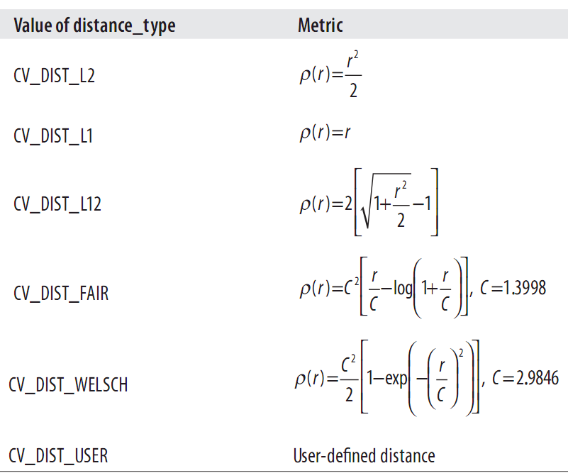
调用OpenCV的距离变换函数时，输出图像必须是32位浮点类型图像（例如IPL_DEPTH_32F）。
Void cvDistTransform(
const CvArr* src,
CvArr* dst,
int distance_type = CV_DIST_L2,
int mask_size = 3,
const float* kernel = NULL,
CvArr* labels = NULL
);
调用cvDistTransform()时有许多可选择的参数。第一个是distance_type，它指定距离准则。这个参数可用的值是由Borgefors(1996)[Borgefors86]定义的。
distance_type之后是mask_size，可以是3(选择
CV_DIST_MASK_3)或者5(选择CV_DIST_MASK_5)；二者选一，相应地，距离的计算也可以没有核(选择CV_DIST_MASK_PRECISE)。cvDistanceTransform()中的kernel参数是在特殊准则情况下的距离掩膜。这些核是根据Gunilla Borgefors的方法建立起来的，图6-20给出了两个这样的例子。最后一个参数labels，说明每个点与由0像素组成的最近连接部分之间的关系。当label是NULL时，它必须是一个指向整型值数组的指针，这个数组与输入输出图像的大小相同。当函数返回时，
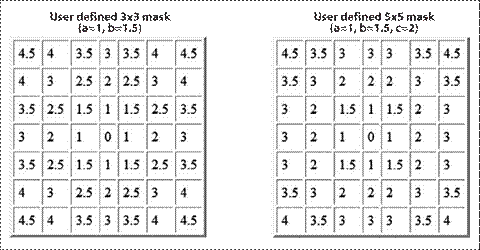
图6-20：两个自定义距离掩码
读取这幅图像可以确定哪个目标同考虑中的特殊像素点最接近。图6-21显示了对一个测试图案和一幅相片进行距离变换的输出。
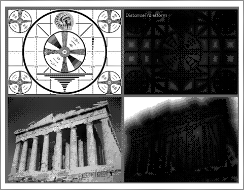
图6-21：首先运行参数1=100，参数2=200的Canny边缘检测算子，然后运行距离变换，输出按照比例为5的比例来缩放以增强可视性
直方图均衡化
通常，摄像机和图像传感器必须不仅仅处理场景的对比度，还必须让图像传感器将这个场景的灯光曝光到结果里。在一个标准的摄像机里，快门和透镜孔的设置会改变传感器的曝光量。通常传感器要处理的对比度范围往往过大而无法处理，因此在捕获黑暗区域（例如：阴影）里和明亮区域之间有一个折衷，黑暗区域需要一个长的曝光时间，而明亮区域需要较短的曝光以避免过饱和。
在指掇完照片之后，对于传感器的记录，我们已经没有什么可做。然而，我们仍然可以对图像做点
事情并且尝试扩大图像的动态范围。对这个操作最常用的技术是直方图均衡化。在图6-22中我们看到左边的图像比较淡因为其数值范围变化较小，这点可以从右边其亮度数值的直方图里明显看出。因为我们处理的是8位图像，其亮度值从0到255，但是直方图显示实际亮度值却集中在亮度范围的中间附近。直方图均衡化就是一种将这个范围拉伸的方法。
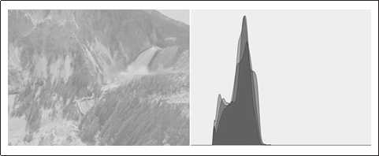
图6-22：左边图像的对比度比较弱，右边的亮度直方图对此进行了验证
直方图均衡化后面潜在的数学原理是一个分布（输入的亮度直方图）被映射到另一个分布（一个更宽，理想统一的亮度值分布）。也就是说，我们希望把原始分布中y轴的值在新分布中尽可能展开。这说明对拉伸数值分布的问题我们有一个比较好的答案：映射函数应该是一个累积分布函数。图6-23是一个累积密度函数的例子，这个函数是单纯高斯分布的理想化情况。然而，累积密度可以应用到任何分布，??是运算从负边界到正边界的原始分布的和。
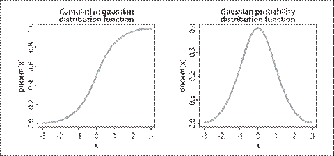
图6-23：高斯分布（右）中累积分布函数（左）的结果
我们可以用累积分布函数来对原始分布进行映射以作为均衡拉伸分布（见图6-24），只需要看原始分布的y值在均衡分布中位于何处。
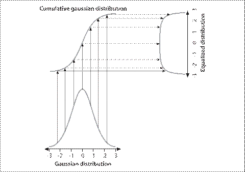
图6-24：利用累积密度函数均衡化高斯分布
对于连续分布，结果将是准确的均衡化，但对于数字/离散分布，结果可能会有很大差异。
将均衡化过程应用到图6-22，就产生均衡化的亮度分布直方图以及结果图像（见图6-25）。整个过程封装在一个简洁的函数里：
void cvEqualizeHist(
const CvArr* src,
CvArr* dst
);
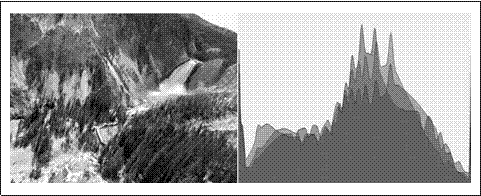
图6-25：直方图均衡化结果：频谱被展开
在cvEqualizeHist()中，原始图像及目标图像必须是单通道，大小相同的8位图像。对于彩色图像，必须先将每个通道分开，再分别进行处理。
练习
1. 用cvFilter2D()创建一个滤波器，只检测一幅图像里60度角的直线。将结果显示在一个有趣的图像场景上。
2. 可分核。
3.
4.
5. 创建一幅新图像，其中只有45度直线，背景为黑，直线为白。给出一系列中孔尺寸，我们将要得到图像的一阶x方向导数（dx）和一阶y方向导数
（dy），然后对这条直线采取以下测量方法。dx和dy图像组成了输入图像的梯度。